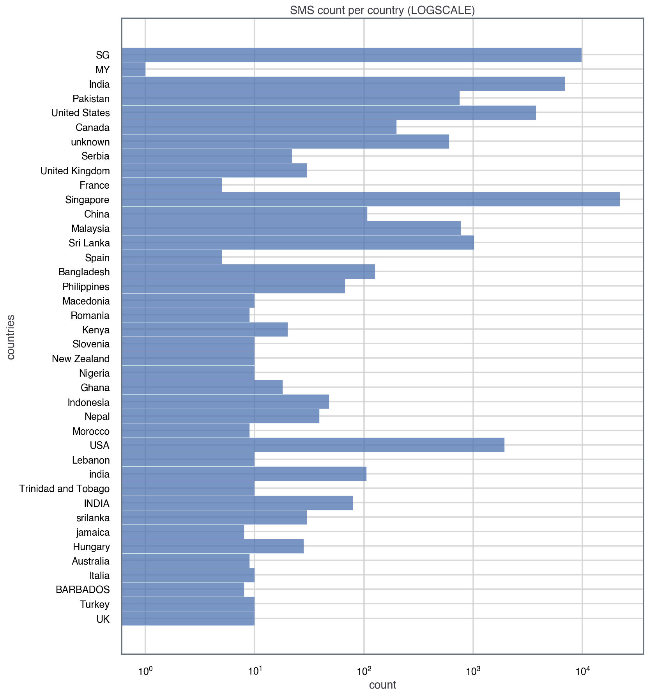
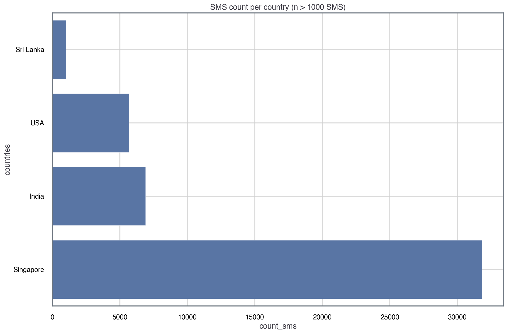

In this project, I’ll be using Natural Language Processing (NLP) to study an SMS dataset. I’m interested to understand whether NLP can tell us something about the nature of SMS.
For the chosen dataset, I hope to answer some of the following questions:
- What words are used most frequently in English SMS texting?
- Is NLP a good tool to study short text like SMS?
- What’s the main sentiment(s) of SMS texts as captured by basic NLP tools?
- What are some potential sources of bias when studying SMS datasets?
In part I of this series I will focus on the pre-processing of the data The main goal of this project is to showcase those who are not NLP experts (like me) the value of basic NLP tools. So let’s dive right in! First, I’ll import some neccesary packages and then have a look at the dataset:
1
2
3
4
5
6
7
8
9
10
11
12
13
14
15
16
17
18
19
20
21
22
23
from jupyterthemes import jtplot
from IPython.display import display_html
from itertools import chain,cycle
import seaborn as sns
%config InlineBackend.figure_format = 'retina' # so you can see plots in HD :)
sns.set(style="whitegrid", font_scale=1.4)
sns.set_palette("colorblind")
COLORS = sns.color_palette("deep", 12).as_hex()
darkmode_on = True
if darkmode_on:
jtplot.style(theme='grade3', context='talk', ticks=True, grid=True)
def display_side_by_side(*args,titles=cycle([''])):
html_str=''
for df,title in zip(args, chain(titles,cycle(['</br>'])) ):
html_str+='<th style="text-align:center"><td style="vertical-align:top">'
html_str+=f'<h2>{title}</h2>'
html_str+=df.to_html().replace('table','table style="display:inline"')
html_str+='</td></th>'
display_html(html_str,raw=True)
Dataset
The dataset used for this analysis compromises 71,000 messages focusing on English and Mandarin Chinese. The dataset is open sourced (at the time of writing) and available here. The details the dataset are also described in Chen, T., Kan, MY. Creating a live, public short message service corpus: the NUS SMS corpus, authored by the researchers who also collected the data.
Let’s quickly have a look at the data:
1
2
3
4
5
6
7
8
9
import pandas as pd
# extract dataset
df_raw = pd.read_csv('data/clean_nus_sms.csv', index_col=0)
df = df_raw.copy()
# explore datset
print(df_raw.keys())
df_raw.head()
1
Index(['id', 'Message', 'length', 'country', 'Date'], dtype='object')
There are not many columns in the dataset, which makes it easier to stratify it or bin it. We could choose to bin it based on the length or Date columns but given that we’re taking an NLP approach and that language is normally country-depdendant. Because of that, let’s look at the distribution of the data based on the country:
1
2
3
4
5
6
7
8
9
10
11
12
13
14
15
16
17
18
19
20
import matplotlib.pyplot as plt
fig, ax = plt.subplots(1,1, figsize=(12,15))
sns.histplot(
data=df,
y='country',
ax=ax,
color=COLORS[0]
)
ax.set_xscale('log')
ax.set_title('SMS count per country (LOGSCALE)')
ax.set_ylabel('countries')
ax.set_xlabel('count')
locs, labels = plt.xticks()
plt.setp(labels, rotation=0)
plt.show()

Noticing that the counts (x-axis) in the distribution are in log-scale, we see that we have a lot of data (SMS) for countries like Singapore (>10,000), whereas for most countries we only have around 10 SMS. For this analysis, let’s only consider countries that have at least 1,000 SMS, and consider other bins of data to have an insuficient sample size for our analysis.
However, we need to be careful because countries like Singapore or the USA two codes: ‘SG’ and ‘Singapore’. For simplicity and consistency, I’ll change ‘SG’ to ‘Singapore’ and ‘United States’ to ‘USA’. So we need to do a bit of data wrangling:
1
2
3
4
5
6
7
8
9
10
11
12
13
14
15
16
17
18
19
20
21
22
23
24
25
26
27
28
29
30
31
32
33
34
35
36
37
38
39
40
41
42
43
44
45
46
47
48
49
50
import spacy as sp
# change 'SG' to 'Singapore' and 'United states country' to 'USA'
mask_sg = df['country'] == 'SG'
df.loc[mask_sg, 'country'] = 'Singapore'
mask_usa = df['country'] == 'United States'
df.loc[mask_usa, 'country'] = 'USA'
# group by country
count_label = 'count_sms'
df[count_label] = 1
grouped_country = df.groupby(by='country', as_index=False)[count_label].count()
# find what countries have a sample size greater than the threshold defined
NSAMPLE_THD = 1000
valid_countries = [row['country'] for index, row in grouped_country.iterrows() if row[count_label] > NSAMPLE_THD]
# filter out countries that have a statistically suficient sample size
df_temp = df[df['country'].isin(valid_countries)].reset_index(drop=True)
data_cols = [
'Message',
'length',
'country',
'Date'
]
data = df_temp[data_cols]
data.head()
# filter out countries that don't meet criteria in grouped df
grouped_country = grouped_country[grouped_country['country'].isin(valid_countries)].sort_values(count_label, ascending=True).reset_index(drop=True)
# plot filtered distribution
fig, ax = plt.subplots(1,1, figsize=(15,10), sharex=True)
sns.barplot(
data=grouped_country,
y='country',
x=count_label,
ax=ax,
color=COLORS[0]
)
ax.grid(True)
ax.set_ylabel('countries')
ax.set_title('SMS count per country (n > 1000 SMS)')
plt.show()

That looks much neater! Also, it means that the analysis will be more statistically meaningful. One should note however that because the study was performed in Singapore, there’s an oversampling for Singapore datapoints. Given the other populations, we could randomly decimate the data for Singapore, but I won’t be doing that in this analysis.
Text Pre-Preprocessing
For this project, the NLP library I chose is spaCy, because it allows one to customize and add components to NLP pipelines. In this context, a pipeline refers to different analytical tools or pre-rpocessing techniques to extract insight from text, such as the [lemmatizer]https://en.wikipedia.org/wiki/Lemmatisation) (which loosely speaking extract the ‘root’ of a word) or the tagger (which assigns part-of-speech tags to the words).
Now into the fun part! Before we start using NLP tools, we need to clean our data. In NLP, this means that we’ll need to do some text pre-processing. For example, we might want to remove words that appear very often but are not very insightful, like ‘a’, ‘an’. These words are known as stopwords.
Part of the pre-processing also entails building a good data-structure to embed the text data. Initially, I set to build a data-structure for the corpus (text-dataset) that would allow me to keep track of what country each SMS corresponds to. One can achieve that through annotations, and as mentioned before, the great thing about spaCy is that it allows one to customize elements of the nlp() pipeline. In this case, it meant that I added the country as an attribute extension to the Doc object:
1
2
3
4
5
6
from spacy.tokens import Doc
add_annotations = False
if add_annotations:
Doc.set_extension('country', default=None, force=True)
corpus = data[["Message","country"]].astype(str).apply(tuple, axis=1).values
However, upon some exploration I realised that the problem would be more challenging as some of these countries have a rich variety of languages (e.g. Singapore and India):
1
2
3
4
5
6
print(
data[data['country'] == 'Singapore'].Message.values[:10], '\n',
'='*180+'\n',
data[data['country'] == 'India'].Message.values[:10], '\n',
'='*180
)
1
2
3
4
5
6
7
8
9
10
11
12
13
14
15
['Bugis oso near wat...'
'Go until jurong point, crazy.. Available only in bugis n great world la e buffet... Cine there got amore wat...'
'I dunno until when... Lets go learn pilates...'
'Den only weekdays got special price... Haiz... Cant eat liao... Cut nails oso muz wait until i finish drivin wat, lunch still muz eat wat...'
'Meet after lunch la...'
'm walking in citylink now ü faster come down... Me very hungry...'
'5 nights...We nt staying at port step liao...Too ex'
'Hey pple...$700 or $900 for 5 nights...Excellent location wif breakfast hamper!!!'
'Yun ah.the ubi one say if ü wan call by tomorrow.call 67441233 look for irene.ere only got bus8,22,65,61,66,382. Ubi cres,ubi tech park.6ph for 1st 5wkg days.èn'
'Hey tmr maybe can meet you at yck']
====================================================================================================================================================================================
['K' 'Studying?' 'Vch photo' 'K:-)ya i hav to finish' 'One senioq akka'
'K d' 'She vil mistake me only cha.dnt talk to me also'
'I am standing up' 'Sorry d v seriously forgot' 'Free']
====================================================================================================================================================================================
An English-trained model like en_core_web_sm won’t perform well on corpa with a diversity of languages, thus any insights drawn from the results would be biased to English-text patterns. So I decided to build a pre-processing pipeline for USA messages and then re-use the the pipeline for other countries on a different project.
The main point of this pre-processing pipeline is to: (i) get rid of stopwords and (ii) extract the lemmas in the text (root of each word that’s still readable).
1
2
3
4
5
6
7
8
9
10
11
12
13
14
15
16
17
18
19
20
21
22
23
24
25
26
27
28
29
30
31
32
from nltk.corpus import stopwords
# extract stopword set and update with more colloquial words
stop_words = {s.lower() for s in stopwords.words("english")}
# load model, get a subsample of the model and extract lemmas
nlp = sp.load('en_core_web_sm')
def text_preprocessing_pipeline(country):
'''
Find lemmas and pos_tag of a subset of SMS based on
country of origin
'''
country_sms = data[data['country'] == 'USA']
country_docs = nlp.pipe(country_sms['Message'].astype(str))
lemmas, pos_tags = [], []
for doc in country_docs:
lemma_i = [token.lemma_.lower() for token in doc if token.lemma_.isalpha() and token.lemma_.lower() not in stop_words]
if len(lemma_i) == 0:
pass
else:
lemmas.append(" ".join(lemma_i))
pos_tags_i = {token.text: token.pos_ for token in doc}
pos_tags.append(pos_tags_i)
return lemmas, pos_tags
# run preprocess pipeline for USA
lemmas, pos_tags = text_preprocessing_pipeline(country='USA')
Next Steps
Now that we have pre-processed the dataset (extracting the lemmas and removing stopwords), we can actually move on to analyse the corpus using NLP tools. That will require somehow turning text into numbers and numerical objects that can be analysed and processed more easily. If you’re interested, you can read further on NLP analysis on SMS text - part II!